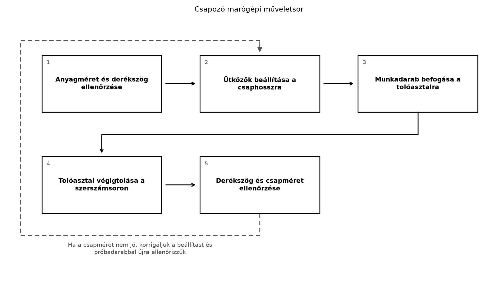
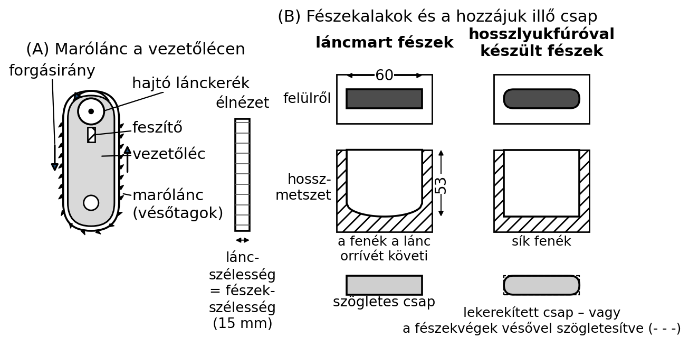

Egy műhelyben húsz darab beltéri ajtószárnyat kell legyártani. Minden ajtókeret sarkát vésett csapozással készítjük el. Ha ezt kézzel, fűrésszel és vésővel csinálnánk, a csapok és a fészkek mérete darabonként kicsit eltérne, a munka pedig napokig tartana. A cél az, hogy minden csap ugyanolyan legyen, és minden fészek pontosan oda illeszkedjen. Erre a feladatra nem az általános asztalos marógépet vagy a kézi vésőt használjuk, hanem a szerkezeti kötések két célgépét: a csapozó marógépet és a láncmarógépet. Az egyik a csapot, a másik a csaplyukat készíti el gyorsan, pontosan és ismételhetően.
Képzelj el egy ajtókeret-elemet, egy 70 mm széles és 45 mm vastag tölgyfa lécet. A csapozó marógépen a lécet egy tolóasztalra fekteted be, rögzíted, majd az asztalt végigtolod egy szerszámsor előtt. A gép egyszerre lemunkálja a csap két oldalát, a csapvállakat és a csap hosszát. Néhány másodperc alatt kész a csap, amelynek vastagsága pontosan 15 mm. A csaplyukat a láncmarógépen készíted el: a megjelölt helyre egy mozgó, vésőtagokból álló lánc süllyed le, és téglalap alakú, tiszta falú fészket mar a fába. A csap és a fészek illesztése szárazon is szoros, ragasztóval pedig teljesen zárt.
A gépi csapozás folyamatát az alábbi ábra mutatja:

Az ábra (a) része felülről mutatja a gépet: a 80 × 45 mm-es léc a tolóasztalon fekszik, a befogó leszorítja, az oldalsó ütköző igazítja. Az asztal a védőburkolat alatti szerszámsor előtt halad el: a végszelő fűrész méretre vágja a léc végét, a felső és alsó csapozó marófej kialakítja a csap két oldalát és a vállakat. A (b) részen a marólánc a vezetőléccel együtt süllyed a hevederbe, amíg a mélységi ütköző 53 mm-nél meg nem állítja. A HTML-kiadásban a folyamat lépésenként lejátszható.
Definíció. A csapozó marógép olyan faipari megmunkálógép, amely keretszerkezeti elemek végén a csapot és a csapvállakat készíti el. A munkadarabot egy mozgó tolóasztalra fogjuk fel, és az asztalt végigtoljuk egy szerszámsoron. A szerszámsor több marófejből vagy maróorsóból áll, amelyek a csap különböző felületeit egy menetben munkálják meg.
Definíció. A láncmarógép olyan fúró-maró gép, amely marólánccal készít téglalap keresztmetszetű fészket, azaz hagyományos csaplyukat. A marólánc egy vezetőlécen futó, vésőtagokból álló lánc. A lánc a vezetőléc orrán lévő lánckeréken fordul meg, és a forgása közben a vésőtagok a faanyagból apró forgácsot vágnak ki. A gép a láncot vezetőlábbal együtt függőlegesen süllyeszti a munkadarabba, így a fészek alja párhuzamos a munkadarab felületével.

A Vésett csapozás: szakállas, átmenő, T-kötés; hevederek elve gépen ugyanaz, mint kézzel: a csap belemegy a fészekbe, a csapvállak a hevederfelületekre támaszkodnak, a ragasztó pedig a csap oldalfelületein és a vállakon köt. A különbség a kivitelezés sebessége, pontossága és ismételhetősége.
Szabály. A gépi csapozás előtt a munkadarabokat méretre kell gyalulni. A csapozó marógép abból indul ki, hogy a munkadarab szélessége és vastagsága pontos, a lapjai párhuzamosak, az élei derékszögűek. Ha a gyalulás pontatlan, a gép sem tud jó csapot marni.
A gépi csapozás tipikus menete:
Szerkezeti megmunkálások más gépeken.
1. Számítás. Csap és fészek méretezése gépi megmunkáláshoz.
Adott egy asztalláb felső keretléce: szélessége , vastagsága . A vésett csapozás szabálya szerint a csapvastagság a lécvastagság körülbelül egyharmada. Keresett: a csap vastagsága és a fészek mélysége .
Képlet és behelyettesítés:
A gépi beállításhoz a csapvastagságot célszerű tizedmilliméterre, lehetőség szerint 0,1 mm pontossággal megadni. A fészek szélessége a marólánc szélessége (a lánc nem állítható szélességű szerszám), ezért a csapvastagságot a meglévő láncszélességekhez kerekítjük: vegyünk fel 13 mm-es láncot (a gyártói láncszélesség-sor ellenőrizendő), és a csapozó gépet próbadarabon erre a láncra illesztve állítjuk be.
A fészek mélysége a szélesség kétharmada körül legyen:
A csap hosszát ennél 1–2 mm-rel kisebbre választjuk, hogy a ragasztó és az illesztés ne feszüljön a fészek alján. Legyen a csap hossza 52,0 mm, a láncmaró fészekmélysége pedig 53,0 mm.
Ellenőrzés: a csapvastagság a 40 mm-es anyagnak közel a harmada, tehát a csap mellett mindkét oldalon közel 13,5 mm-es heveder marad. Ez a kézi csapozásban bevált arány. ∎
2. Számítás. Láncmaró forgácsolási sebessége.
Adott: a láncmaró hajtó lánckerekének átmérője , fordulatszáma . Keresett: a lánc mozgásának kerületi sebessége (m/s).
Képlet:
Behelyettesítés:
Ellenőrzés: a faipari marószerszámokra jellemző forgácsolási sebesség 10–80 m/s tartományban van, tehát a 13,2 m/s reális. A pontos értéket azonban mindig a gépkönyv és a láncgyártó adatlapja szerint kell beállítani. ∎
Megjegyzés. A láncmaró előtolását a gépkezelő kézzel szabályozza. A túl gyors előtolás túlterheli a láncot, a túl lassú előtolás égeti a fát. Az optimális előtolás anyagtól, fészekmélységtől és a lánc állapotától függ (ellenőrizendő: gépkönyv és gyártói adatlap).
Gépbiztonság. A művelet betanított, felügyelt tanulónak szól; védőberendezés nélkül, egyedül, fáradtan ne végezd.
A csapozó marógép és a láncmarógép nagy fordulatszámú, motoros hajtású szerszámokkal dolgozik. A legfontosabb védőberendezések:
Tilos.
Technológiai lap. Keretlécek csapozása csapozó marógépen és láncmarógépen.
Termék: beltéri ajtószárny középkeretléce, 70 × 45 mm, tölgy.
Anyagok: méretre gyalult tölgyfa léc, ragasztó: beltéri ajtóhoz D2, nedves helyiségbe D3 (MSZ EN 204 – ellenőrizendő: termékadatlap), ragasztófelesleg-törlő.
Gépek és szerszámok: egyoldali csapozó marógép, láncmarógép, mérőszalag, tolómérő, derékszögelő, próbadarab, előrajzoló ceruza.
Gépbiztonság és egyéni védőeszközök: védőszemüveg, hallásvédő, porvédő légzésvédelem (FFP2 vagy a gépkönyv előírása szerint), szorosra gombolt vagy húzott munkaruha. A gépeket csak betanított, felügyelt tanuló kezeli, védőberendezés nélkül soha.
Indítás előtti ellenőrzés:
Lépések:
A gépi csapozás után a következőket ellenőrizzük:
Eltérésnél a beállítást korrigálni kell, és új próbadarabot kell marni.
Egy asztalos műhelyben húsz darab beltéri ajtószárny keretlécét kell legyártani. A régi, kézi vésési módszerrel a munka nyolc napot venne igénybe, és a keresztmetszetek nem lennének egyformák. A műhelyben egyoldali csapozó marógép és láncmarógép áll. A beállító próbadarabok után a gépek sorban készítik a csapokat és a fészkeket. A gyártás során az egyik lécen a láncmaró fészke kissé ferde lett. Az asztalos azonnal megállította a gépet, ellenőrizte a befogót, és újrahúzta a szorítót. A következő próbadarabon a fészek már tökéletes volt. Így a sorozat két nap alatt elkészült, és az ajtószárnyak keretei szárazpróbán mindenhol zártak és derékszögűek lettek. A tanulság: a gépek sebessége csak akkor érvényesül, ha a beállítás, a próbadarab és a minőségellenőrzés nem marad el.
1. feladat (A). Sorold fel a csapozó marógép legfontosabb részeit, és magyarázd el, mi a tolóasztal szerepe!
2. feladat (A). Írd le röviden, mi a különbség a csapozó marógép és a láncmarógép között a késztermék szempontjából!
3. feladat (B). Számítsd ki a csap vastagságát és a fészek mélységét egy 60 mm széles, 36 mm vastag léc esetén! A csap vastagságát 0,5 mm-re kerekítsd, és a csap hosszát 1 mm-rel rövidebbre válaszd a fészekmélységnél!
4. feladat (B). Egy láncmaró lánckerekének átmérője 75 mm, fordulatszáma 3200 1/min. Számítsd ki a lánc kerületi sebességét!
5. feladat (C). Egy műhelyben keretléceket csapoznak. A csapok mérete a sorozat gyártása közben fokozatosan egyre vastagabb lesz. Mi lehet az ok, és milyen ellenőrzést kellene végezni?
6. feladat (D). Válassz ki egy 80 mm széles, 45 mm vastag tölgyfa lécet, és készíts hozzá gépi csapozási tervet! Add meg a csap, a fészek méreteit és a láncmaró beállítási mélységét! Rajzold le szövegesen a csap oldalát és a fészek metszetét!
Önellenőrzés – válaszok
1. feladat megoldása. A csapozó marógép részei: gépállvány, vízszintes munkafelület, szerszámsor (marófejek), védőburkolat, befogó, tolóasztal, ütközők, elszívócsonk. A tolóasztal szerepe: a munkadarabot ezen rögzítjük, és az asztalt a szerszámsor előtt végigtolva a marófejek a csapot kialakítják.
2. feladat megoldása. A csapozó marógép a csapot és a csapvállakat készíti; a láncmarógép a csaphoz illeszkedő, éles, derékszögű sarkú fészket (csaplyukat) készít. A csapozó marógép a keretléc végét, a láncmarógép a keretléc oldalát munkálja meg.
3. feladat megoldása. Adott: , . Csapvastagság: . Fészekmélység: . Csaphossz: . A láncmaró mélységi ütközőjét 40 mm-re, a csapozó gép csaphosszát 39 mm-re állítjuk.
4. feladat megoldása. Adott: , . . A kerületi sebesség körülbelül 12,6 m/s.
5. feladat megoldása. A fokozatos méretnövekedés oka lehet a marófejek meglazulása, a szerszám vagy a gép felmelegedése, vagy a beállító csavar elmozdulása. A beállítást le kell állítani, a szerszámrögzítést ellenőrizni, és új próbadarabot marni. Ha a méret továbbra is növekszik, a gép szervizelését kell kérni.
6. feladat megoldása. Adott: , . Csapvastagság: . Fészekmélység: , kerekítve 53 mm. Csaphossz: 52 mm. Láncmaró beállítási mélysége: 53 mm. A csap: hossza 52 mm (a lécvégtől), vastagsága 15 mm, szélessége 60 mm (két 10 mm-es szakállal, tájékoztató); a vállak a léc élére merőlegesek. A fészek: 15 mm széles, 60 mm hosszú, 53 mm mély, alja párhuzamos a léc lapjával; ha a lánc 40 mm hosszú vágást ad, két egymás melletti fogással készül (ellenőrizendő: láncméret).
A csapozó marógép a keretszerkezeti elemek végén a csapot és a csapvállakat készíti el egy szerszámsoron. A munkadarabot tolóasztalra fogjuk be, és az asztalt egyenletesen a marófejek elé toljuk. A láncmarógép ezzel szemben a fészket, azaz a csaplyukat munkálja meg marólánccal, amely éles, derékszögű sarkú, tiszta falú lyukat hagy. A gépi csapozás mindig a Vésett csapozás: szakállas, átmenő, T-kötés; hevederek elvén alapul: a csap, a csapváll és a fészek geometriája azonos, csak a kivitelezés gyorsabb és pontosabb. A csap vastagságát a léc vastagságának közel harmadára, a fészek mélységét a léc szélességének közel kétharmadára választjuk, a csap hossza 1–2 mm-rel rövidebb. Gépbiztonság: faipari gépet csak betanított, felügyelt tanuló kezelhet, védőberendezés nélkül soha; a csapozó gépen a szerszámsort burkolat, a láncmarón a láncot védőbúra fedje, a munkadarabot mindig befogó rögzítse, és az elszívást be kell kapcsolni. Továbbvitt eredmény. A gépi csapozást használjuk a Fúrógépek: hosszlyukfúró, sorozatfúró, 32-es rendszer és szerelvényhelyek, a Ajtók gyártástechnológiája gépekkel és a Ablakgyártás gépekkel, ablakvasalatok és beállítás alfejezetekben, mert a keretes ajtók, ablakok, asztalok és székek sorozatgyártása ezen a csap-fészek kötésen és a csapozó-láncmaró géppáron alapul.